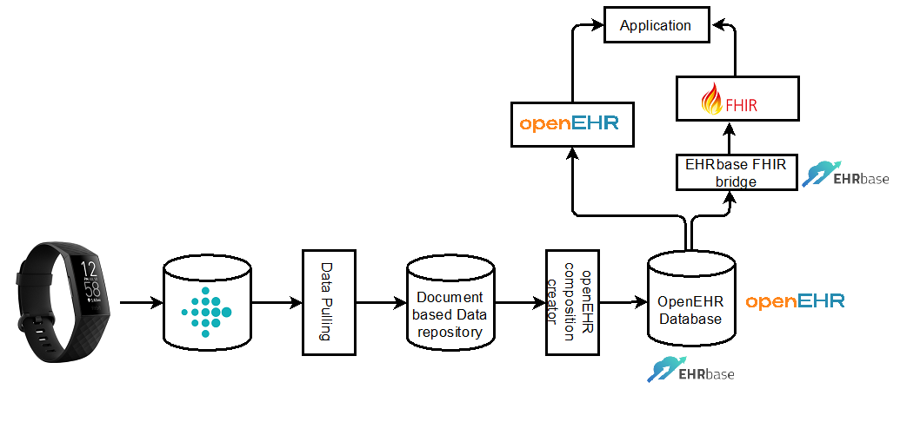

Reflective Journal No. 1 — Learning to Hear the Data
The Beginning — Before the Fellowship
“This journey began with a simple question.”
During one of the lectures I was giving on openEHR modeling, I was explaining the distinction between Observation and Evaluation when I suddenly paused. The whiteboard was half-covered with diagrams, the students were waiting for me to continue, but something shifted.
Without planning to, I asked:
“How do we record life in data?
Not just illness.
How do we capture the quiet signals of the body?”
The room fell silent — not the silence of confusion, but the silence of a new idea forming. I did not realize it yet, but this was the beginning of the path I am still walking.
As I continued working with archetypes, I found myself drawn to examine:
- what already exists,
- what is missing,
- and what should be expressed more clearly.
At the same time, I was collaborating with students on an openEHR modeling project.
We worked through design, modeling, evaluation, revision — a shared thinking process.
Resulting Publications
Application of the openEHR reference model for PGHD: DH-Convener Case Study (IJMI, 2024)

Later, I noticed increasing discussions in the openEHR community regarding physical activity and wearable-generated health data:
Meanwhile, broader global initiatives were exploring similar directions:
-
HL7 PGHD Policy Framework
Draft White Paper PDF -
AHRQ Clinical Decision Support Innovation Collaborative (CDSiC)
Reflection
I now recognize that this fellowship did not start my journey — it simply made visible what was already unfolding.
The central question is still guiding me:
How do we create space in the health record for life — not only illness?
Not to answer it once and for all,
but to keep walking with it.